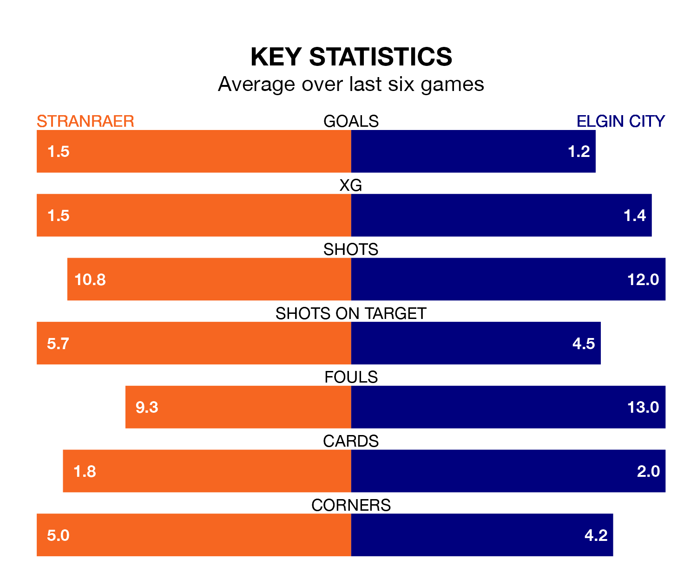

Struggling Stranraer face Elgin City at Stair Park on Saturday looking to build on a win in their last league outing.
After securing all three points with a 0-2 victory over Peterhead on March 9, Stranraer sit ninth in League Two.
They travel to play an Elgin side seventh in the standings, who also won their last match, 1-0 against Bonnyrigg Rose Athletic.
In the last 10 years, Stranraer and Elgin have played each other on 14 occasions. Stranraer won seven of them, Elgin five, and they drew twice.
On average, Stranraer scored 1.6 goals and the Black & Whites 1.5 in those matches.
Their last meeting was on January 6, when Elgin won 2-1 at home.
In Tom McHale, Elgin can rely on one of the league's safest pair of hands. He has kept six clean sheets in his 27 appearances this season in League Two.
In Stranraer's net, Lewis Budinauckas has five clean sheets in 21 games. He has conceded a goal every 61 minutes, only slightly more often than the 62 minutes between goals for McHale.
With 26 goals in 28 games so far this season, City are the league's lowest scorers with 0.9 goals per game. And they are conceding more than average, letting in 46 goals at a rate of 1.6 per game.
The home team are also below average scorers, with 1.2 goals per game, compared to a league average of 1.3. They have conceded 1.6 goals per game.
Stranraer are in mixed form in League Two, with two wins and a draw from their last six games.
With two wins and two draws over that period, the Black & Whites' form is slightly better – they have taken eight points from 18, compared to Stranraer's seven.
Saturday's match will be refereed by Duncan Williams, who has taken charge of nine League Two games so far this season, issuing two red cards and booking 42 players. He has awarded four penalties.
The last Elgin game Williams refereed was the 2-2 draw at home against Stenhousemuir on February 17. He is yet to oversee a match featuring Stranraer this season.
Updated: 15:10 (UTC), 15/03/24